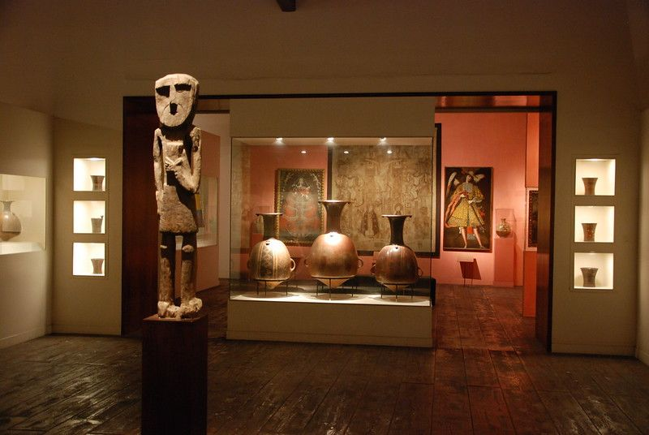
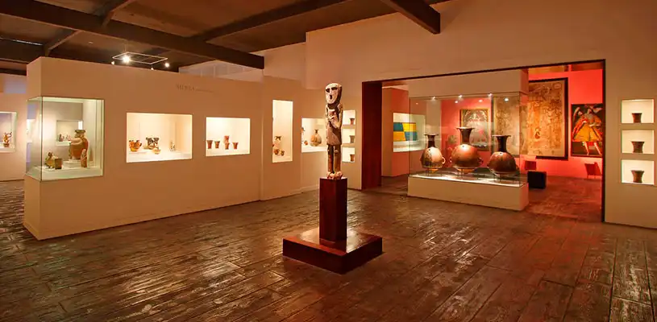
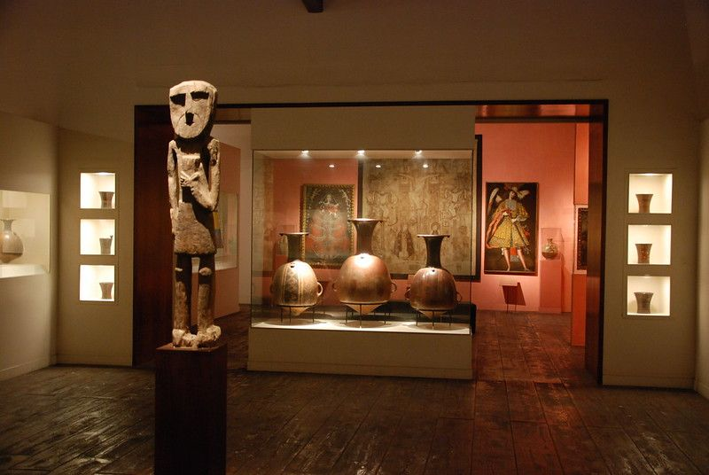
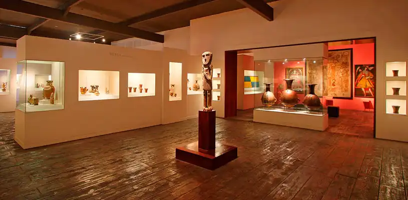

Perú es un país con una riqueza cultural e histórica incomparable. A través de sus museos, se puede hacer un viaje por las distintas etapas de su pasado, desde las culturas precolombinas hasta la era colonial y republicana. A continuación, te presentamos tres de los museos más representativos del país: el Museo Larco, el Museo de Oro del Perú y el Museo Nacional de Arqueología, Antropología e Historia del Perú.
Museo Larco
El Museo Larco fue fundado en 1926 por Rafael Larco Hoyle, pionero de la arqueología peruana, y alberga una fascinante colección de arte precolombino de aproximadamente 45,000 piezas arqueológicas.
 



Museo de Oro del Perú
Exhibe objetos de oro y armas antiguas de la época preincaica.